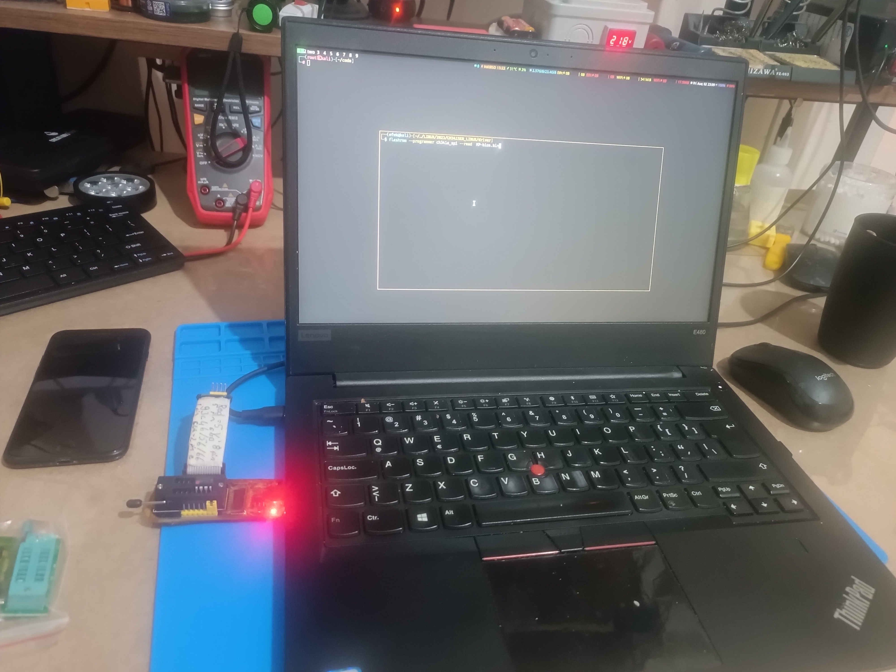

Elimde bir eeprom programlayici var ve bunu linux uzerinde kulanmak istedim.
Guncel suruculerini Bu adreste buldum.
Ilk olarak depoyu git ile yerele klonladim.
$ git clone https://github.com/YTEC-info/CH341A-Softwares
Sonra benim icin gerekli olan dizine girdim.
$ cd CH341A-Softwares/Drivers/LINUX/2023
ls komutu ile dizin icerigine baktigimda
$ ls
CH341PAR_LINUX.ZIP CH341SER_LINUX.ZIP readme.md
2 tane arsiv dosyasi buldum ve unzip ile cikardim.
$ unzip CH341SER_LINUX.ZIP
Niye CH341SER_LINUX.ZIP dosyasi diye sorarsaniz. Nedeni asagida...
- CH341SER_LINUX.ZIP: USB to Serial (RS232) adaptorleri icin suruculer icerir.
- CH341PAR_LINUX.ZIP: USB to Parallel (LPT) adaptorleri icin suruculer icerir.
$ cd CH341SER_LINUX/driver
$ ls
Makefile ch341.c ch341.h
Bir Makefile gordum. Direk make komutu ile derlemeye basladim. Tabi ben bu islemler icin
kali linux kullanmaktayim. Linux da cekirdek modulleri derlemek icin bazi ekstra kurulumlar gerekli.
Sizler kendi dagitiminiza gore kurulum gerceklestirebilirsiniz.
$ make
make -C /lib/modules/6.8.11-amd64/build M=/home/efek/code/CH341A-Softwares/Drivers/LINUX/2023/CH341SER_LINUX/driver
make[1]: Entering directory '/usr/src/linux-headers-6.8.11-amd64'
CC [M] /home/efek/code/CH341A-Softwares/Drivers/LINUX/2023/CH341SER_LINUX/driver/ch341.o
/home/efek/code/CH341A-Softwares/Drivers/LINUX/2023/CH341SER_LINUX/driver/ch341.c:1095:20: error: initialization of
‘void (*)(struct tty_port *, bool)’ {aka ‘void (*)(struct tty_port *, _Bool)’} from incompatible pointer type
‘void (*)(struct tty_port *, int)’ [-Werror=incompatible-pointer-types]
1095 | .dtr_rts = ch341_port_dtr_rts,
| ^~~~~~~~~~~~~~~~~~
/home/efek/code/CH341A-Softwares/Drivers/LINUX/2023/CH341SER_LINUX/driver/ch341.c:1095:20: note:
(near initialization for ‘ch341_port_ops.dtr_rts’)
/home/efek/code/CH341A-Softwares/Drivers/LINUX/2023/CH341SER_LINUX/driver/ch341.c:1454:18: error:
initialization of ‘ssize_t (*)(struct tty_struct *, const u8 *, size_t)’ {aka ‘long int (*)(struct tty_struct *,
const unsigned char *, long unsigned int)’} from incompatible pointer type ‘int (*)(struct tty_struct *,
const unsigned char *, int)’ [-Werror=incompatible-pointer-types]
1454 | .write = ch341_tty_write,
| ^~~~~~~~~~~~~~~
/home/efek/code/CH341A-Softwares/Drivers/LINUX/2023/CH341SER_LINUX/driver/ch341.c:1454:18: note:
(near initialization for ‘ch341_ops.write’)
cc1: some warnings being treated as errors
make[3]: *** [/usr/src/linux-headers-6.8.11-common/scripts/Makefile.build:248:
/home/efek/code/CH341A-Softwares/Drivers/LINUX/2023/CH341SER_LINUX/driver/ch341.o] Error 1
make[2]: *** [/usr/src/linux-headers-6.8.11-common/Makefile:1946:
/home/efek/code/CH341A-Softwares/Drivers/LINUX/2023/CH341SER_LINUX/driver] Error 2
make[1]: *** [/usr/src/linux-headers-6.8.11-common/Makefile:252: __sub-make] Error 2
make[1]: Leaving directory '/usr/src/linux-headers-6.8.11-amd64'
make: *** [Makefile:5: default] Error 2
Karsimiza yazilim sorunlari cikmakta. Simdi kisaca bunlardan soz edip, kodlarimizi duzenleme asamasina gecelim ve tekrar derleyelim.
Ilk sorunumuz
Bu hata, dtr_rts isaretcisi tty_port yapi tipini alan bir islevi gosteren bir isaretci olmasini beklerken,
ch341_port_dtr_rts fonksiyonunun parametre turunun uyumsuz olmasi nedeniyle meydana gelir. Yani, dtr_rts
isaretcisi void (*)(struct tty_port *, bool) turunde bir islev isaretcisi olmali, ancak ch341_port_dtr_rts
fonksiyonunun prototipi void (*)(struct tty_port *, int) gibi gorunuyor.
Bu uyumsuzluğu cozmek icin ch341_port_dtr_rts fonksiyonunun imzasini bool tipiyle uyumlu hale getirmeniz gerekecektir.
Asagidaki sekilde.
void ch341_port_dtr_rts(struct tty_port *port, bool on) {
Ikinci sorunumuz
Bu hatada, ch341_tty_write fonksiyonunun imzasinin, write isaretcisinin beklediği imzayla uyumlu olmadiğini belirtir.
write isaretcisi, ssize_t (*)(struct tty_struct *, const u8 *, size_t) turunde bir islev isaretcisi olmalidir. Ancak
ch341_tty_write fonksiyonu int (*)(struct tty_struct *, const unsigned char *, int) turunde tanimlanmis.
Cozumu
Fonksiyon imzasini, write isaretcisinin beklediği turle uyumlu hale getirmeliyiz. Yani, int yerine ssize_t ve size_t turlerini kullanmaliyiz.
Soyle bir yama hazirladim!
return tty_port_open(&ch341->port, tty, filp);
}
-static void ch341_port_dtr_rts(struct tty_port *port, int raise)
+static void ch341_port_dtr_rts(struct tty_port *port, bool raise)
{
struct ch341 *ch341 = container_of(port, struct ch341, port);
int res;
@@ -637,7 +637,7 @@
tty_port_close(&ch341->port, tty, filp);
}
-static int ch341_tty_write(struct tty_struct *tty, const unsigned char *buf, int count)
+static ssize_t ch341_tty_write(struct tty_struct *tty, const unsigned char *buf, size_t count)
{
struct ch341 *ch341 = tty->driver_data;
int stat;
Simdi tekrar derledigimiz zaman sorunsuz bir sekilde calismasi lazim.
$ make
make -C /lib/modules/6.8.11-amd64/build M=/home/efek/code/CH341A-Softwares/Drivers/LINUX/2023/CH341SER_LINUX/driver
make[1]: Entering directory '/usr/src/linux-headers-6.8.11-amd64'
CC [M] /home/efek/code/CH341A-Softwares/Drivers/LINUX/2023/CH341SER_LINUX/driver/ch341.o
MODPOST /home/efek/code/CH341A-Softwares/Drivers/LINUX/2023/CH341SER_LINUX/driver/Module.symvers
CC [M] /home/efek/code/CH341A-Softwares/Drivers/LINUX/2023/CH341SER_LINUX/driver/ch341.mod.o
LD [M] /home/efek/code/CH341A-Softwares/Drivers/LINUX/2023/CH341SER_LINUX/driver/ch341.ko
BTF [M] /home/efek/code/CH341A-Softwares/Drivers/LINUX/2023/CH341SER_LINUX/driver/ch341.ko
Skipping BTF generation for /home/efek/code/CH341A-Softwares/Drivers/LINUX/2023/CH341SER_LINUX/driver/ch341.ko due to unavailability of vmlinux
make[1]: Leaving directory '/usr/src/linux-headers-6.8.11-amd64'
Evet, Simdi modulumuzu sisteme yuklemeye gecebiliriz...
$ sudo make install
[sudo] password for efek:
make -C /lib/modules/6.8.11-amd64/build M=/home/efek/code/CH341A-Softwares/Drivers/LINUX/2023/CH341SER_LINUX/driver
make[1]: Entering directory '/usr/src/linux-headers-6.8.11-amd64'
make[1]: Leaving directory '/usr/src/linux-headers-6.8.11-amd64'
mkdir -p /lib/modules/6.8.11-amd64/kernel/drivers/usb/serial/
cp -f ./ch341.ko /lib/modules/6.8.11-amd64/kernel/drivers/usb/serial/
depmod -a
Evet, modinfo ile baktigimda gorebiliyorum.
$ modinfo ch341
filename: /lib/modules/6.8.11-amd64/kernel/drivers/usb/serial/ch341.ko
alias: char-major-169-*
license: GPL
version: V1.6 On 2022.08
description: USB serial driver for ch340, ch341, etc.
author: WCH
srcversion: *******B1CC8***************************
alias: usb:v****p****d*dc*dsc*dp*ic*isc*ip*in*
alias: usb:v****p****d*dc*dsc*dp*ic*isc*ip*in*
alias: usb:v****p****d*dc*dsc*dp*ic*isc*ip*in*
alias: usb:v****p****d*dc*dsc*dp*ic*isc*ip*in*
alias: usb:v****p****d*dc*dsc*dp*ic*isc*ip*in*
depends: usbcore
retpoline: Y
name: ch341
vermagic: 6.8.11-amd64 SMP preempt mod_unload modversions
Simdi BIOS programlayiciyi USB ile baglayip bir test islemi yapmak kaldi.

{kind=link}
$ flashrom --programmer ch341a_spi --read HP-bios.bin
flashrom unknown on Linux 6.8.11-amd64 (x86_64)
flashrom is free software, get the source code at https://flashrom.org
Using clock_gettime for delay loops (clk_id: 1, resolution: 1ns).
Found Winbond flash chip "W25X40" (512 kB, SPI) on ch341a_spi.
===
This flash part has status UNTESTED for operations: WP
The test status of this chip may have been updated in the latest development
version of flashrom. If you are running the latest development version,
please email a report to flashrom@flashrom.org if any of the above operations
work correctly for you with this flash chip. Please include the flashrom log
file for all operations you tested (see the man page for details), and mention
which mainboard or programmer you tested in the subject line.
Thanks for your help!
Reading flash... done.
Sorunsuz bir sekilde okuma islemini tamamladi. Simdi bir de dogrulama islemi yapalim.
$ flashrom --programmer ch341a_spi --verify HP-bios.bin
flashrom unknown on Linux 6.8.11-amd64 (x86_64)
flashrom is free software, get the source code at https://flashrom.org
Using clock_gettime for delay loops (clk_id: 1, resolution: 1ns).
Found Winbond flash chip "W25X40" (512 kB, SPI) on ch341a_spi.
===
This flash part has status UNTESTED for operations: WP
The test status of this chip may have been updated in the latest development
version of flashrom. If you are running the latest development version,
please email a report to flashrom@flashrom.org if any of the above operations
work correctly for you with this flash chip. Please include the flashrom log
file for all operations you tested (see the man page for details), and mention
which mainboard or programmer you tested in the subject line.
Thanks for your help!
Verifying flash... VERIFIED.
Sorunsuz bir sekilde onuda tamamladi. Bir son olarak yazma islemi yapalim.
$ flashrom --programmer ch341a_spi --write HP-bios.bin
flashrom unknown on Linux 6.8.11-amd64 (x86_64)
flashrom is free software, get the source code at https://flashrom.org
Using clock_gettime for delay loops (clk_id: 1, resolution: 1ns).
Found Winbond flash chip "W25X40" (512 kB, SPI) on ch341a_spi.
===
This flash part has status UNTESTED for operations: WP
The test status of this chip may have been updated in the latest development
version of flashrom. If you are running the latest development version,
please email a report to flashrom@flashrom.org if any of the above operations
work correctly for you with this flash chip. Please include the flashrom log
file for all operations you tested (see the man page for details), and mention
which mainboard or programmer you tested in the subject line.
Thanks for your help!
Reading old flash chip contents... done.
Erasing and writing flash chip...
Warning: Chip content is identical to the requested image.
Erase/write done.
Hex editor ile soyle bir goz atalim.
``` $ hexedit HP-bios.bin 00000000 FF FF FF FF FF FF FF FF FF FF FF FF 08 F8 00 00 E8 0F 6C 88 08 00 81 E7 08 F8 11 90 ..................l......... 0000001C 00 00 00 00 01 00 00 00 17 00 00 00 05 20 21 04 34 0F 00 00 46 61 BD 2C 01 00 00 00 ............. !.4...Fa.,.... 00000038 1D 00 00 00 D0 1B 00 00 00 1C 00 00 00 00 00 00 00 00 00 00 00 00 00 00 7A 32 BF 9F ........................z2.. 00000054 51 B4 41 2B 59 9C AF 9F E4 B8 62 6B 1B BF A4 28 00 02 A9 68 17 6A D1 76 19 FC 0D B9 Q.A+Y.....bk...(...h.j.v.... 00000070 21 35 A5 3C FC 66 46 A0 35 D0 5A 04 1B 2E FB 26 29 12 FB A4 E8 F3 E4 07 EA 61 44 C9 !5.<.fF.5.Z....&)........aD. 0000008C AB 3E 1A 7C 4C 99 43 7A C4 8B BB C7 9A 69 35 7E A0 F2 6F F7 2A AD 13 31 BB AB 89 DF .>.|L.Cz.....i5~..o...1.... 000000A8 C9 DA 46 A8 67 DD 78 88 68 BF 2F 4F F3 29 26 8A 5C DE CD 19 AC D3 F5 33 10 05 CC 89 ..F.g.x.h./O.)&.......3.... 000000C4 7C B5 39 69 1F E2 0C 1D 75 C9 D8 CB 7A BC 99 83 9C BC 40 33 3C B3 E5 2A 55 6D 3F 48 |.9i....u...z.....@3<..Um?H 000000E0 75 35 C2 A5 6E 5B D8 0C 9C 5A 6E C4 BC 04 12 B3 A5 96 5A CB FA D1 24 6A AF 9D B0 C1 u5..n[...Zn.......Z...$j.... 000000FC D8 6B 97 65 C5 82 73 62 84 98 D9 31 18 04 76 CD 9F 81 85 AB 0A 40 4E CD DB B7 54 E7 .k.e..sb...1..v......@N...T. 00000118 B2 A0 DC BF CE BA B4 6F DC AF BA 7C 8C E2 DB DE 6B 85 F4 0F 27 7E 00 D2 0C FD FD 34 .......o...|....k...'~.....4 00000134 ED 8A 4B 7D 07 C4 25 C7 96 7B 9F 55 EC 44 99 CD A0 89 D1 04 1E 3E F5 05 6C 44 17 4D ..K}..%..{.U.D.......>..lD.M 00000150 CE F6 86 00 3E 41 9A A5 A9 A7 99 06 EA 71 87 CB 22 0F C8 8D 17 5B 75 7D 52 5C 4D 12 ....>A.......q.."....[u}R\M. 0000016C EF 07 00 F3 40 F8 BC BD 10 11 3D C3 9D CC 21 A9 9A 34 C9 3B 1F 8E 2C 48 A2 45 75 44 ....@.....=...!..4.;..,H.EuD 00000188 6F 95 3E A8 AE 40 C2 7E AF 2D 23 B0 3F 49 B4 1E 3A E0 FA 74 7A 24 55 22 81 8D 98 14 o.>..@.~.-#.?I..:..tz$U".... 000001A4 99 B6 53 CF FC 4F DB BC 2E 0D 6B C9 A5 6E AB 77 9C 8A 24 C4 42 47 1B 17 76 48 1B 32 ..S..O....k..n.w..$.BG..vH.2 000001C0 51 5F 07 6E B6 70 97 D0 CE 4B F7 44 C0 37 32 1B 49 C9 AB 81 40 A0 7B 8E 74 29 45 3F Q_.n.p...K.D.72.I...@.{.t)E? 000001DC 0E E7 A1 C7 A3 7E 8A 2C 24 20 DE 75 34 0E 53 21 EB 09 CD 95 1D 33 7E 6E A8 C8 90 84 .....~.,$ .u4.S!.....3~n.... 000001F8 83 25 3E 3A 1F 70 E1 EA C1 E0 3A 3A C9 3A C4 B9 B3 B7 47 08 CA CB 40 22 E3 DD E7 66 .%>:.p....::.:....G...@"...f 00000214 6E 05 4B BD 88 AF 7B E1 0D B8 8C C4 18 AD AD CA 17 25 63 9F 99 13 85 A6 16 1E 2F 48 n.K...{..........%c......./H 00000230 0E 39 B7 BD 63 AB 66 B8 A9 ED 6E 3A DD FD 39 9B 1B B3 08 93 17 DE 77 6A 6E 89 11 15 .9..c.f...n:..9.......wjn... 0000024C CA 32 44 BB AD 1F C8 64 F6 F2 31 50 67 DC E5 48 9D 46 5B 92 40 39 3F F7 0C 86 6E A0 .2D....d..1Pg..H.F[.@9?...n. 00000268 5B 34 74 D0 19 7A 5D E4 78 6E 7B F6 E0 F2 69 A1 03 62 69 B5 BE 54 9C 8E F8 D9 BA BA [4t..z].xn{...i..bi..T...... 00000284 BB 5A A2 DF 83 63 B1 E7 4E 74 77 13 92 E1 3A 0C D9 10 7E CC BA DB C5 4D 39 05 66 88 .Z...c..Ntw...:...~....M9.f. 000002A0 F2 22 A8 0D F4 62 AE 11 3F CD 9A F1 C1 F4 62 AB 5F A5 D9 6E 36 02 3E EC 14 D6 9F 04 ."...b..?.....b._..n6.>..... 000002BC E9 4E 5C BC 63 B0 F5 3E 6F A4 6C 34 FC 5D 78 51 D0 92 16 71 8E 87 A0 E5 70 37 16 48 .N.c..>o.l4.]xQ...q....p7.H 000002D8 08 A8 46 68 1B DC 48 65 19 A6 76 E1 DE 6F B3 6A 2C F4 8A BC FE 6F 3E C4 53 93 F4 5B ..Fh..He..v..o.j,....o>.S..[ 000002F4 BC AD 86 19 DB E6 89 39 71 3F 0F 6E F9 1F 99 63 52 BC 1D 42 1D 2C 17 0A 49 1B 20 F9 .......9q?.n...cR..B.,..I. . 00000310 42 DF 64 C8 1E 21 17 A7 7C 02 7B BD 8A 48 7B C3 9F 15 40 1B 29 6E B5 82 23 A9 45 70 B.d..!..|.{..H{...@.)n..#.Ep 0000032C 95 5F 63 A9 02 29 44 6E 46 39 5D D0 8A 6C EF 18 61 13 30 53 21 3B 09 98 08 E0 87 69 ._c..)DnF9]..l..a.0S!;.....i 00000348 98 91 75 BD A3 A7 35 83 31 7E A0 E4 56 32 9B 82 5D 4F D1 86 B0 36 32 37 A2 03 16 EE ..u...5.1~..V2..]O...627.... --- HP-bios.bin --0x0/0x80000--0%------------------------------------------------------------------------------------------ ````
Evet, Artik linux uzerinde sorunsuz bir sekilde bios programlayabiliriz...